Blue Jay
Scientific Name:
Cyanocitta cristata
Order:
Passeriformes
Family:
Corvidae
Etymology
Cyanos (Gr.) – “blue”, kitta (Gr.) – “a chattering bird;” cristata (L.) – “crested.”
Back to top
About
This common name for a familiar bird (Cyanocitta cristata) of Central and E North America, allied to the crow, the raven, and the magpie, belonging to the family Corvidae.
The Blue Jay embodies all the aggressive virtues of the corvid family: it is beautiful, resourceful, and vocally diverse, but at time it can become almost too loud and mischievous. Only the Black-billed Magpie is louder, and interactions between these two species can be amusing. We have watched jays hide peanuts under leaves, only to have them stolen and re-buried by magpies, reclaimed by the jays, and so on.
Back to top
Description
A bright blue bird with a conspicuous crest; shows much white on wings and tail in flight. Adults have bright blue upperparts with many black bars and white patches on the wings and tail; a blue crest may be erected at will; face and throat dull white; a black line from the bill through the eye and a black border around the throat join to form a band around the hindneck; underparts smoke gray becoming white on the abdomen; tail fairly long, the feathers graduated in length.
Back to top
Habitat
Mixed and deciduous forest is preferred habitat of this jay. This includes semi-open areas of ornamental shade trees.
The Blue Jay is resident in central Alberta from the Peace River district, Lesser Slave Lake, and Fort McMurray south to about Red Deer. In recent years it has been found nesting at Elnora, Beynon, Calgary, and Okotoks, and as a vagrant it has been recorded as far south as Brooks. The Blue Jay breeds in southern and central Saskatchewan from Moose Mountain Park, the Qu-Appelle valley, and Saskatoon north to Kazan Lake, but it is only a rare vagrant at Regina and Uranium City. The species is resident in Manitoba from Thicket Portage south to the prairies; at Churchill it is a rare vagrant.
Back to top
Food
Blue Jays glean insects and take nuts and seeds in trees, shrubs, and on the ground; they also eat grains. They also take dead and injured small vertebrates. Blue Jays sometimes raid nests for eggs and nestlings, and sometimes pick up dead or dying adult birds. Stomach contents over the year are about 22 percent insect. Acorns, nuts, fruits, and grains made up almost the entire remainder. Of 530 stomachs examined, traces of bird eggs and nestlings were found in only 6 stomachs, although a search was specially made for every possible trace of bird remains. Blue Jays hold food items in feet while pecking them open. They store food in caches to eat later.
Back to top
Nesting
In trees, usually conifers. Nest, a bulky mass of twigs, bark, moss, rags, etc., lined with fine rootlets.
These birds are year-round residents of Alberta and begin preparing for courtship in late winter. The 3-6 potential male suitors of a flock will intimidate, fight, and bob at each other before a single individual is finally chosen. This male will courtship-feed his potential mate, as well as present twigs to her for a mock nest (Savage 1985). A conifer tree is usually chosen for nesting. The nest is built near the trunk and elevated 2.4 m to 7.5 m above ground. Both adults construct the bulky nest of twigs, barks, moss, rags and lichens, and line it with fine rootlets, grass, and, occasionally, feathers. The 4-6 olive or buff eggs are variably marked with browns. The following period of 17-18 days is quietly spent by the female incubating, while the male feeds her and loosely guards the location. The single brood will be replaced if lost (Harrison 1978). Although only the female broods the chicks, both adults tend to the young, feeding them caterpillars and worms. The young fledge after 17-23 days, and quickly become as vocal as their parents.
| Nesting Facts[10] | |
|---|---|
| Clutch Size (Eggs): | 4-6 |
| Incubation (Days): | 17-18 |
| Fledging (Days) | 17-21 |
| Nest Height (Meters) | 2.4 - 7.5 |
Back to top
Sound
Blue Jays utter a loud “jay-jay-jay” call but they can mimic a variety of species like the Red-tailed Hawk. They also produce a horn-like “weedle-eedle”
Back to top
Behaviour
This species is noisy and aggressive at feeders. They are bold in stealing food and in eating the eggs and chicks of other species. Like other jays, they fly on a level and will glide but not as regularly as do Gray Jays.
Back to top
Remarks
Blue Jays are most in evidence during the winter when they appear around city homes, at farmhouses, and at woodland cottages, looking for food in garden and garbage. Table scraps, suet, grain, nuts, all will attract them, but they are especially fond of sunflower seeds; a few ripe sunflower heads left in the garden will bring Blue Jays from afar. Up to a dozen may gather at a feeding shelf in winter, dominating all other birds, until their voracious appetites are satisfied. Blue Jays are the sentinels of the woods. A passing weasel or an owl caught sleeping in a spruce evokes strident calls of jay – jay until their victim leaves the area. Anyone interest in predators soon learns to pay attention to the jays and to seek the cause of their alarm.
Back to top
Backyard Tips
Blue Jays prefer tray feeders or hopper feeders on a post rather than hanging feeders, and they prefer peanuts, sunflower seeds, and suet. Planting oak trees will make acorns available for jays of the future. Blue Jays often take drinks from birdbaths.
Back to top
Cool Facts
- Thousands of Blue Jays migrate in flocks along the Great Lakes and Atlantic coasts, but much about their migration remains a mystery. Some are present throughout winter in all parts of their range. Young jays may be more likely to migrate than adults, but many adults also migrate. Some individual jays migrate south one year, stay north the next winter, and then migrate south again the next year. No one has worked out why they migrate when they do.
- Blue Jays are known to take and eat eggs and nestlings of other birds, but we don’t know how common this is. In an extensive study of Blue Jay feeding habits, only 1% of jays had evidence of eggs or birds in their stomachs. Most of their diet was composed of insects and nuts.
- The Blue Jay frequently mimics the calls of hawks, especially the Red-shouldered Hawk. These calls may provide information to other jays that a hawk is around, or may be used to deceive other species into believing a hawk is present.
- Tool use has never been reported for wild Blue Jays, but captive Blue Jays used strips of newspaper to rake in food pellets from outside their cages.
- Blue Jays lower their crests when they are feeding peacefully with family and flock members or tending to nestlings.
- At feeders in Florida, Red-headed Woodpeckers, Florida Scrub-Jays, Common Grackles, and gray squirrels strongly dominate Blue Jays, often preventing them from obtaining food.
- The pigment in Blue Jay feathers is melanin, which is brown. The blue color is caused by scattering light through modified cells on the surface of the feather barbs.
- The black bridle across the face, nape, and throat varies extensively and may help Blue Jays recognize one another.
 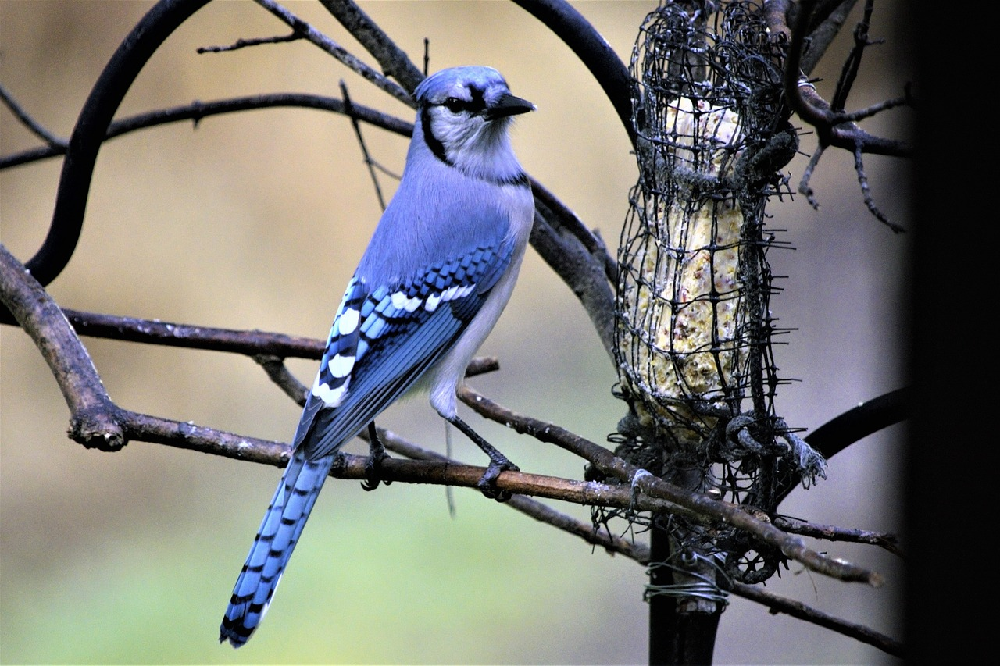
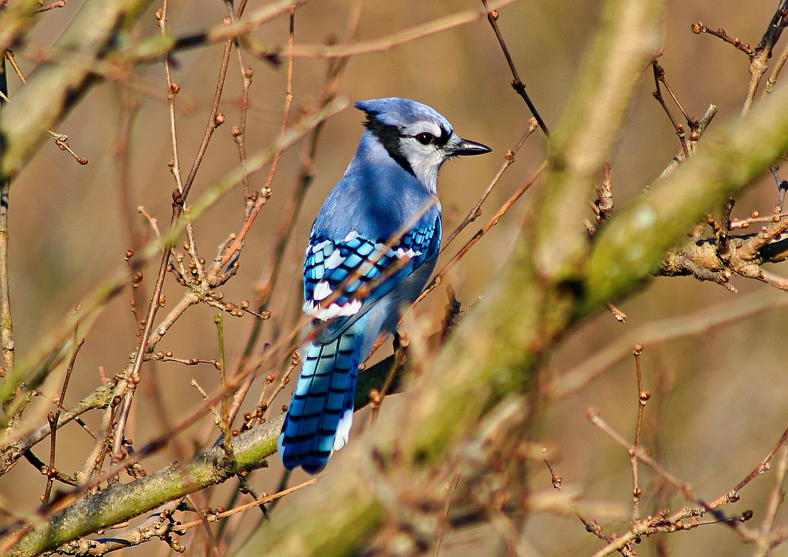
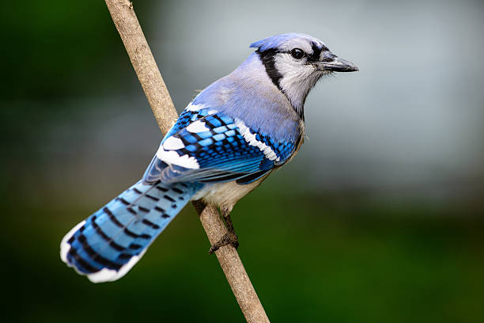
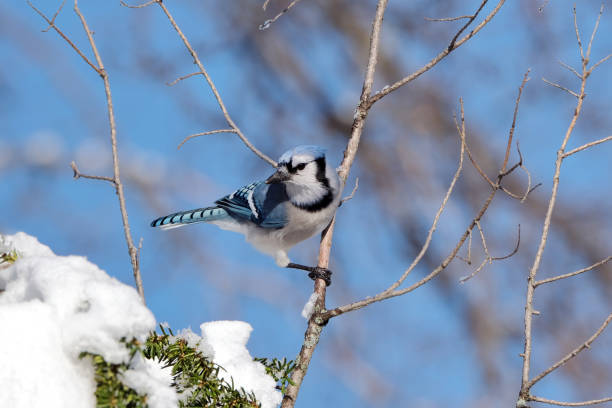
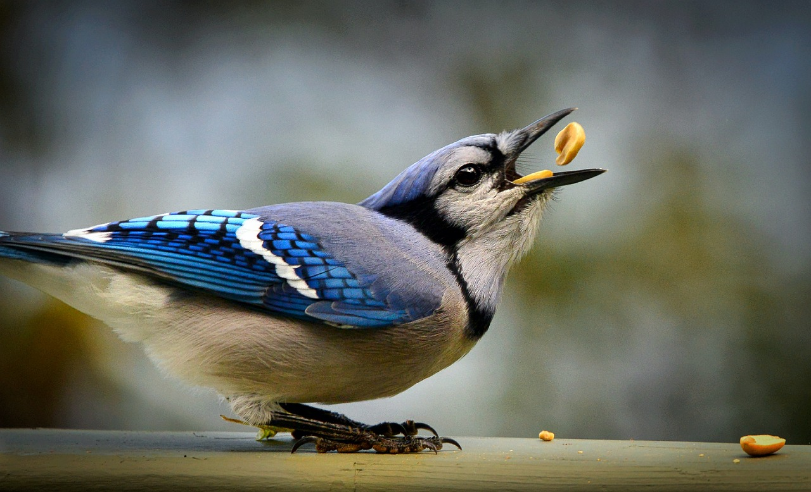
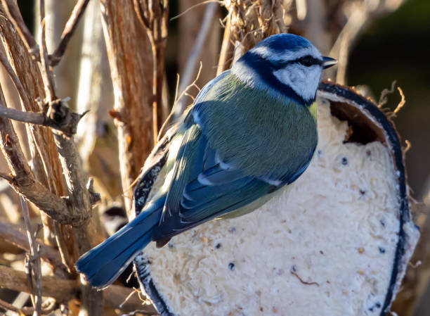
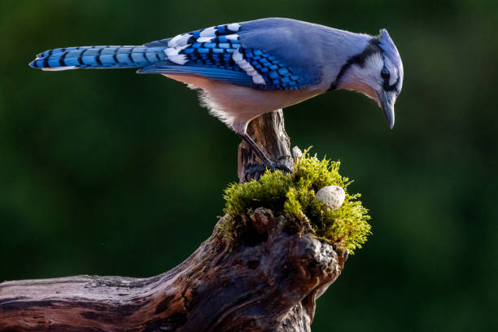
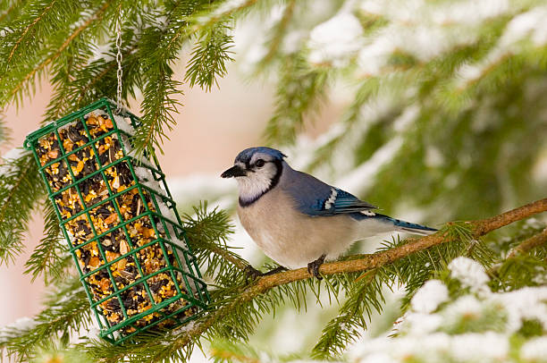
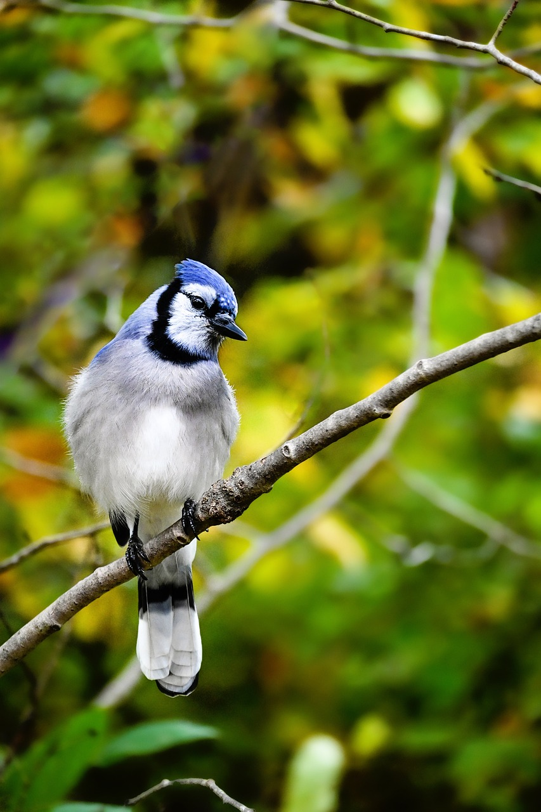
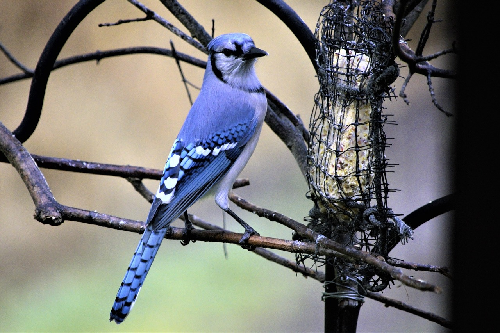
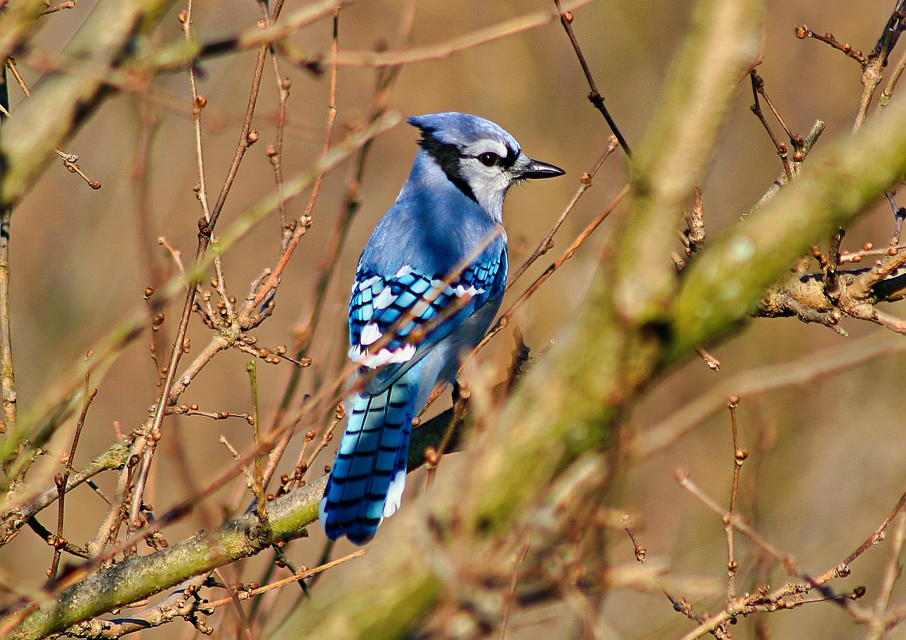
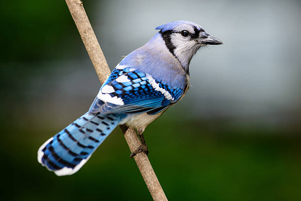
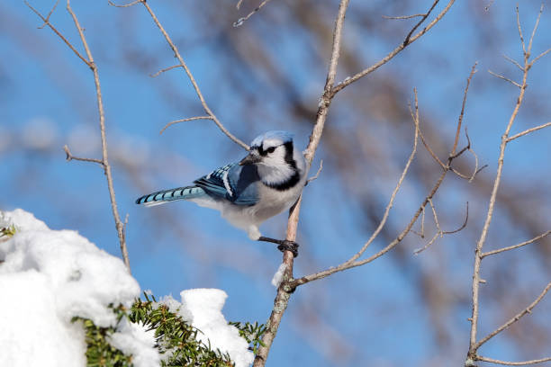
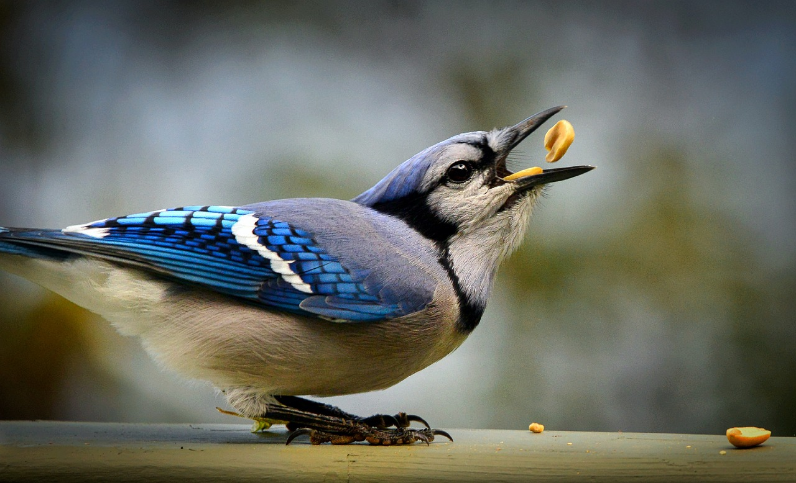
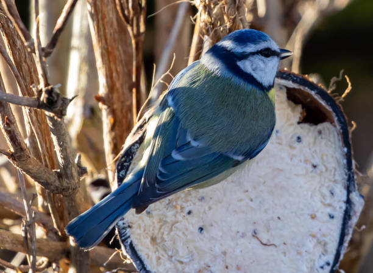
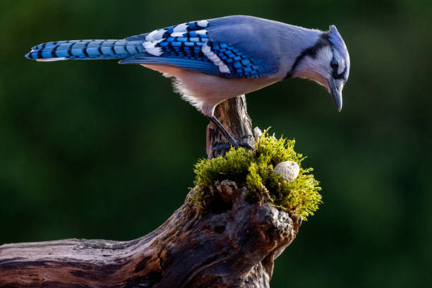
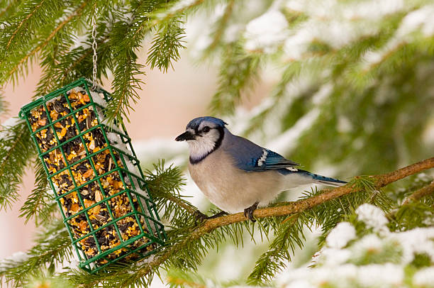
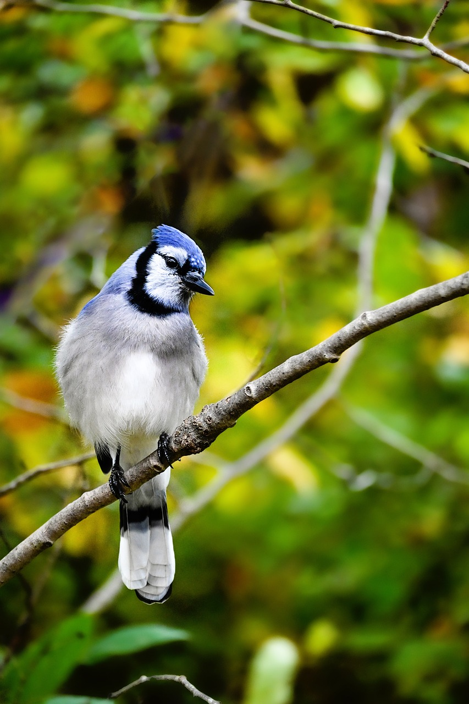